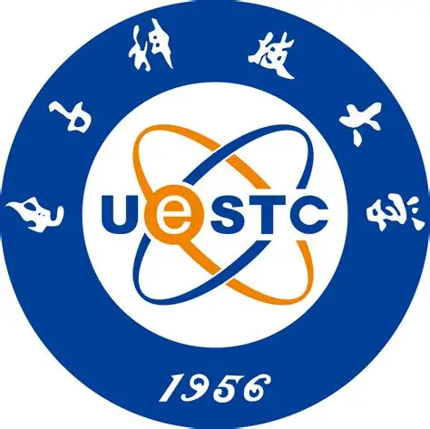
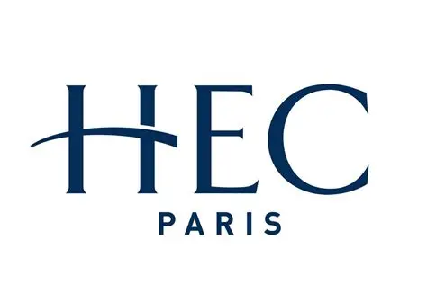
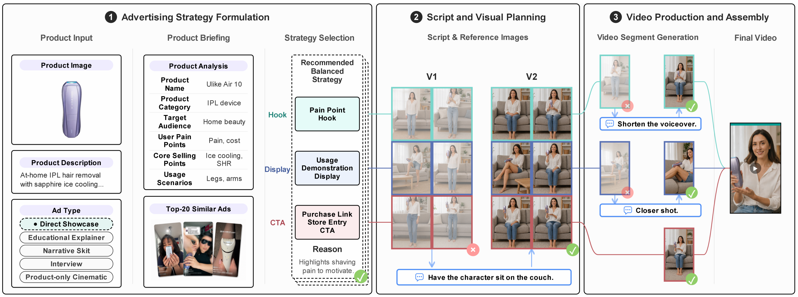
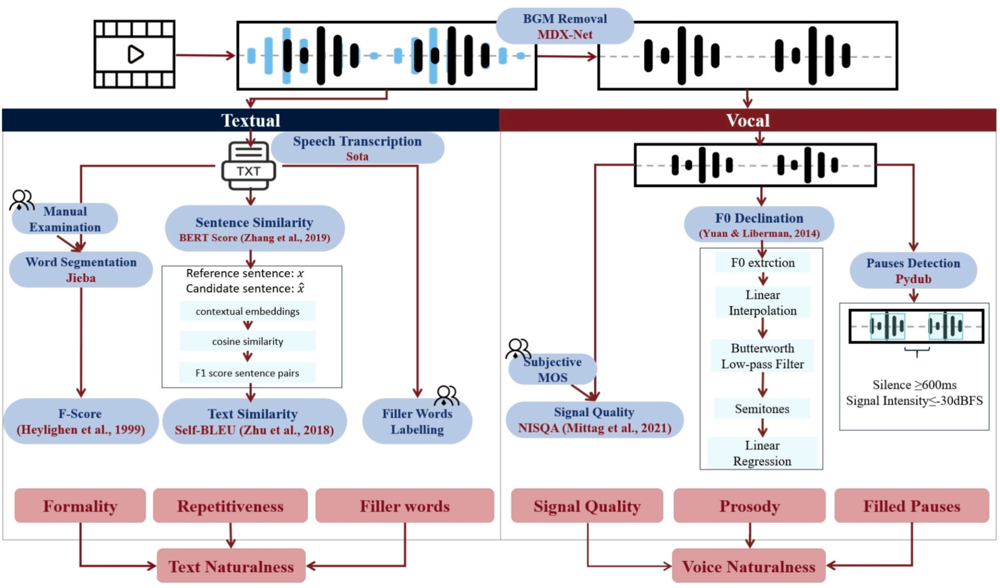
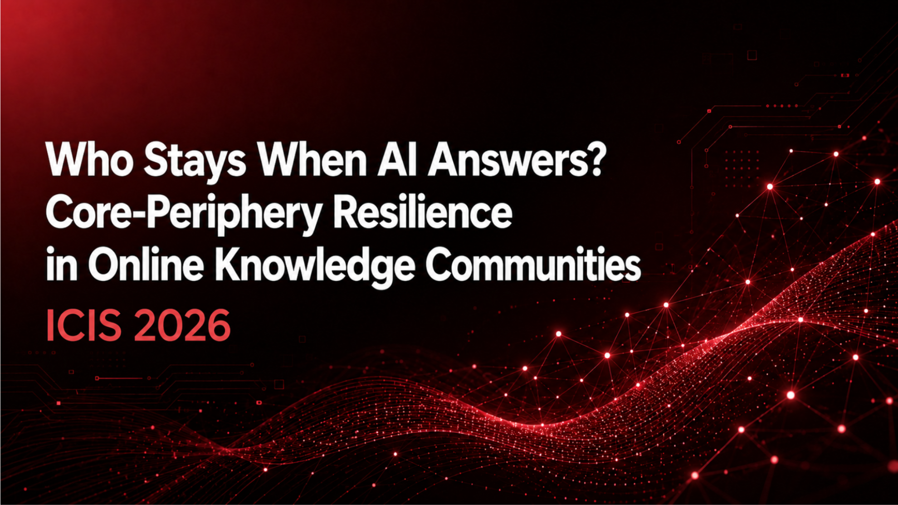

Welcome to my website! I’m Ruoxi, a master's student in Management, Technology and Entrepreneurship at École Polytechnique Fédérale de Lausanne (EPFL).
My research focuses on the applications of generative AI in marketing and information systems and on designing human-centered AI systems that support effective and controllable human-AI collaboration. I am particularly interested in how emerging technologies, such as virtual humans, AI-generated content, and AI agents, reshape content creation and consumer engagement.
I am currently seeking PhD opportunities that align with these research interests, with the goal of advancing human-centered AI and making meaningful contributions to the field.
📖 Education
École Polytechnique Fédérale de Lausanne (EPFL)
Sep. 2024–Present
University of Electronic Science and Technology of China
Sep. 2020–Jun. 2024🔬 Research Experience
ETH Zurich
Sep. 2026–Jun. 2027 (expected)LLM-Based Voice Agents for Property Services

HEC Paris
Jun. 2026–Sep. 2026AdStudio: A Strategy-Guided System for Controllable Human-AI Co-Creation of Short Video Ads
University of Lausanne (UNIL)
Sep. 2025–Jun. 2026Who Stays When AI Answers? Core-Periphery Resilience in Online Knowledge Communities
University of Electronic Science and Technology of China
Sep. 2023–Jun. 2024Is more human-like better? The impact of virtual streamer language naturalness on user engagement
📝 Publications

AdStudio: A Strategy-Guided System for Controllable Human-AI Co-Creation of Short Video Ads
Li, X., Zhang, R., Sun, M., Zhang, S., Zhu, H., and Li, X.
Under review at ACM CHI 2027 Manuscript
- We present a strategy-guided human-AI co-creation system that helps creators translate advertising strategies into short video ads while retaining control.

Is more human-like better? The impact of virtual streamer language naturalness on user engagement
Zhang, R., Fang, J., Han, L., and Liao, M.
Technological Forecasting and Social Change, 222, 124392 ABS 3 · SSCI Q1
- We examine how virtual streamers’ text and voice naturalness relate to user engagement, and how anthropomorphic appearance moderates these relationships.

Who Stays When AI Answers? Core-Periphery Resilience in Online Knowledge Communities
Li, L., Zhang, R., Zeng, S., and Shrestha, Y. R.
International Conference on Information Systems (ICIS) Accepted
- We study how ChatGPT’s release reshaped participation and contribution among core and peripheral users using 52-week panel data covering 558,980 users.
🏆 Honors and Awards
- 2024 Outstanding Graduate, University of Electronic Science and Technology of China.
- 2023 First-Class Outstanding Scholarship, UESTC.
- 2023 Samsung Scholarship.
- 2023 National Second Prize, 13th National College Students’ E-Commerce “Innovation, Creativity and Entrepreneurship” Challenge.
- 2022 First-Class Outstanding Scholarship, UESTC.
- 2022 Provincial Gold Award, 8th China International “Internet+” College Students’ Innovation and Entrepreneurship Competition.
- 2021 First-Class Outstanding Scholarship, UESTC.
🛠️ Skills and Languages
- Programming and tools: Python, R, Stata, SQL, MATLAB, Hadoop, and LaTeX.
- Languages: Mandarin (native); English (IELTS 8.0: Listening 9.0, Reading 8.5, Writing 6.5, Speaking 7.0).
- Standardized test: GRE General Test: 327 (Quantitative 170, Verbal 157).